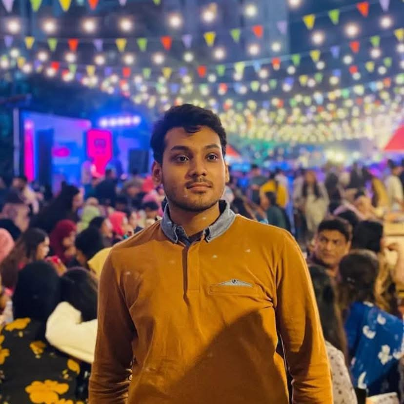

01Cover image — to add
Project type — to add
Project title
Short description — what it was, what you did, and what you learned. 2–3 lines is enough.
Link / files — to add
Media & Communication · Photography · Research
Media Production, Public Relations & Research Enthusiast | Photographer | Storyteller
First-year Media & Communication undergraduate at Albukhary International University, Malaysia — fully funded Albukhary Foundation Scholar

Alor Setar, Kedah, Malaysia
01
First-year BMC student at AIU and fully funded Albukhary Foundation Scholar — media production, public relations & research enthusiast, photographer and storyteller.
I am Abdullah Mohammad Faisal, a first-year student in the Bachelor of Media & Communication (BMC) programme at Albukhary International University (AIU). I am a fully funded Albukhary Foundation Scholar, with expected graduation in December 2029.
My interests are in editing and public relations — how media is shaped, polished, and shared with an audience — alongside photography, research, and storytelling.
Before university, I took on leadership and community roles in Bangladesh from 2023 to 2025 — serving as General Secretary of the Millat Photography Club and Assistant Director of the Millat Journalist Forum. Those roles gave me early, hands-on experience in photography, journalism, and working with a community.
02
Research interests and publications will be added here as they develop.
International Islamic University Chittagong (IIUC) conference
03
Written pieces and articles will be added here.
No articles have been added yet.
04
Coursework, media work, presentations, writing, photography — anything you want lecturers or collaborators to see.
Short description — what it was, what you did, and what you learned. 2–3 lines is enough.
Short description — what it was, what you did, and what you learned. 2–3 lines is enough.
Short description — what it was, what you did, and what you learned. 2–3 lines is enough.
05
Work, internships, and other experience will be added here.
No experience entries have been added yet.
06
Bachelor of Media & Communication at Albukhary International University, Malaysia — 2026 – Present, first year, fully funded Albukhary Foundation Scholar, graduating December 2029. Before AIU: Alim (Higher Secondary Certificate, Equivalent) in 2024 and Dakhil (Secondary School Certificate, Equivalent) in 2022, both with GPA 5.00 / 5.00.
Albukhary International University, Malaysia
First-year BMC student (2026 – Present) and fully funded Albukhary Foundation Scholar. Expected graduation: December 2029. Interests in editing and public relations.
Tamirul Millat Kamil Madrasha, Tongi, Gazipur, Bangladesh
Completed in 2024 under the Bangladesh Madrasah Education Board with GPA 5.00 / 5.00.
Islamia Alia Kamil Madrasah, Chawkbazar, Comilla, Bangladesh
Completed in 2022 under the Bangladesh Madrasah Education Board with GPA 5.00 / 5.00.
07
Leadership roles held from 2023 to 2025 — in photography and student journalism, before starting university.
Millat Photography Club
Served as General Secretary of the Millat Photography Club during 2023–2025 — a leadership and community service role supporting the club and its photography activities.
Millat Journalist Forum
Served as Assistant Director of the Millat Journalist Forum during 2023–2025 — a leadership and community service role supporting the forum and its student journalism work.
08
Honors and awards will be added here.
No honors or awards have been added yet.
09
Photography & film, content & audio, three languages, and research — with editing and public relations as my focus areas.
Documentary and event work — shooting, directing, and finishing films through to the final grade.
Producing and shaping content for audiences — audio, scripts, social media, and short-form video.
The languages I work and communicate in.
Academic research skills — from data analysis to writing up findings.
10
11
A CV will be added here.
No CV has been added yet.
12
Open to research collaboration, media projects, and conversations about visual storytelling.
Free 20–30 minute peer mentoring — career guidance, academic help, or higher-study planning. Fill in the form and I'll confirm a time by email.
2 sessions booked so far